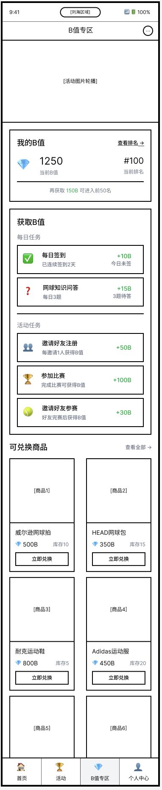
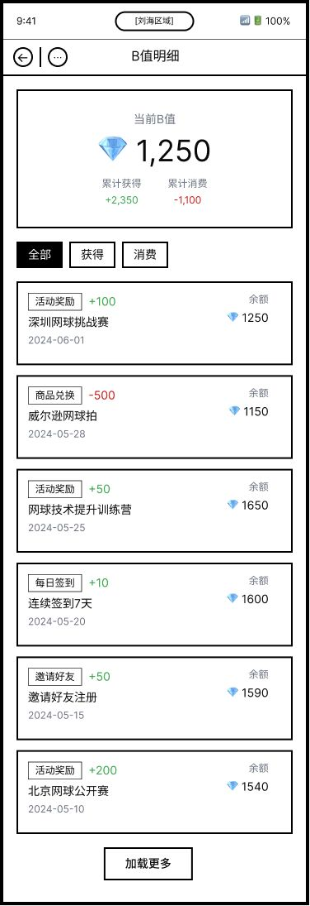

比赛反人性
传统长盘动辄 2 小时，节奏枯燥，缺乏短视频传播力。

China's Digital O2O Tennis Ecosystem
重构一亿年轻人的网球社交生态
以顶级大满贯体验为入口，以“B值”为核心货币的 Web2.5 体育社交平台。
The Opportunity
郑钦文奥运夺金引爆市场，Tenniscore 成为年轻人的新社交货币。One Win 押注的是一个高净值、强社交、正在加速释放的增量市场。
奥运冠军破圈，网球从精英运动走向大众潮流。
中国网球参与人口突破 2,500 万，全球第二；预计 2029 年市场规模突破 624.9 亿元。
Market Pain
传统长盘动辄 2 小时，节奏枯燥，缺乏短视频传播力。
极度依赖场地；非赛事期间用户流失率 100%，利润极薄。
找搭子难，小白与大神难以匹配，缺乏持续情绪价值。
The Core
Positioning
办赛只是获客手段和流量漏斗；终局是一家以赛事为切入点的高净值数字社交平台。

Offline Moat
Format Moat
City Matrix
Online Moat
完全替代第三方报名工具，完成“报名-参赛-社交-变现”的底层闭环。





B-Value Economics
完善信息、每日打卡、赢球奖励、拉新裂变、线上竞猜，形成自动化积分体系。
实名认证、防作弊算法、排行榜公信力和动态筛选机制，确保用户质量。
报名费抵扣、赞助商抽奖、虚拟徽章、免排队权益和搭子大厅置顶卡。

Unfair Advantages
Monetization
赛事总冠名、官方指定用车/用表/饮用水。
小程序开屏、Banner、Keep 联合招商分成。
12 站报名费与重点城市观赛派对门票。
澳网圆梦之旅、虚拟道具、置顶卡。
Financial Model
随着 12 站赛事推进，边际成本递减，而品牌赞助和线上广告收入随 DAU 与明星势能提升。
Team & Roadmap

The Ask